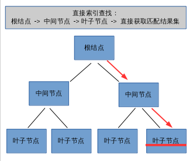
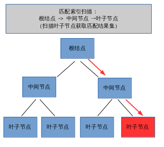
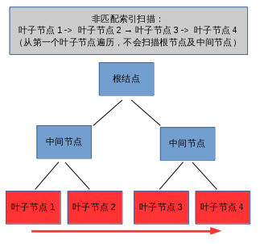

DB2数据库对象 —— 索引
索引概述
使用索引的目的
- 确保一个或多个列中值的唯一性；
- 提高查询性能。
使用索引注意事项
- 每个索引都需要占用存储器或磁盘空间；
- 对表执行每个 INSERT、DELETE 操作都要对表上的索引进行额外的变更，对于更新索引键值每个 UPDATE 操作也是如此；
- 对于 LOAD 操作会重建索引，可以在 LOAD 命令中指定 index freespace MODIFIED BY 参数，以覆盖创建索引时使用的索引 PCTFREE。
索引访问机制
至少有一个SQL谓词必须是可索引的。某些谓词因特性而不能被索引，所以优化器不能使用索引来满足；
其中一列（在任何可索引的谓词中）必须作为可用索引中的列而存在。
直接索引查找（最简单）
对DB2而言，为了直接执行“直接索引查找”，在查询的 WHERE 子句中必须为每个索引列供值，即：索引列必须全部出现在 WHERE子句之中；
若 WHERE 子句只指定了部分索引列，那么就不能采用直接索引查找，因为DB2没有针对每列的值，不能匹配整个索引关键字；
若 WHERE 子句只指定了部分索引列，可以选用索引扫描（匹配索引扫描、非匹配索引扫描）。

匹配索引扫描（绝对定位）
使用匹配索引扫描必须在 WHERE 条件中指定索引的”高次序列”，即：首列。
这向DB2提供了遍历索引结构的起始点，从根页开始遍历，直到相应的叶子页。

非匹配索引扫描（相对定位）
若 WHERE 条件中未指定索引的“高次序列”，则会使用非匹配索引扫描。
在这种情况下DB2不能使用索引树结构，因为索引关键字中的第一列不可用。
非匹配索引扫描从索引中的第一个叶子页开始遍历，应用可用的谓词，顺序扫描后续的叶子页。不使用根页和任何中间叶子页。

完全索引访问（index access only)
当查询语句中所需要的数据都位于索引中(即： SELECT的字段)，那么DB2可以避免读取数据页
多索引访问
当查询 WHERE子句中存在多个列，但多列位于不同的索引中，那么该查询将同时使用多个索引进行查询。
根据谓词是用 AND连接 还是 OR连接，可以将多索引访问分为两类：
IndexANDING
IndexANDING是先使用索引1和索引2获取到索引的扫描结果，再将两个扫描结果获取交集IndexORDING
IndexANDING是先使用索引1和索引2获取到索引的扫描结果，再将扫描结果执行合并操作
简单案例
定义 EMPLOYEE表，该表有关于 EMPNO、TYPE、EMPCODE列的索引
直接索引查找1
SELECT FIELD1, FIELD2 FROM EMPLOYEE WHERE EMPNO = 'XXX' AND TYPE = 'XXX' AND EMPCODE = 'XXX';
匹配索引扫描1
SELECT FIELD1, FIELD2 FROM EMPLOYEE WHERE EMPNO = 'XXX' AND TYPE = 'XXX';
非匹配索引扫描1
SELECT FIELD1, FIELD2 FROM EMPLOYEE WHERE TYPE = 'XXX' AND EMPCODE = 'XXX';
创建索引
集群索引
- 集群索引 数据页中的顺序对应于索引中行的顺序，因此表中只能存在一个集群索引；
- 通常情况下，INSERT操作越多，为维护集群所需要的PCTFREE值越大；
- 将表设置为追加方式可能优于使用集群索引（ALTER TABLE APPEND ON）;
1 | CREATE INDEX <index_name> ON <table_name> (<column>) CLUSTER |
双向索引
默认情况下，双向索引允许按正反两个方向进行扫描1
CREATE INDEX <index_name> ON <table_name> ( <column> [DESC] ) ALLOW REVERSE SCANS;
创建索引选项
INCLUDE
NCLUDE 子句在创建索引时，可以选择包含附加的列数据，这些附加的列数据将与键存储在一起，但实际上不是键自身的一部分，所以不被排序。1
CREATE INDEX <index_name> ON <table> ( <column> ) INCLUDE ( <column> )
MINPCTUSED
MINPCTUSED 子句指定在索引页上最小已用空间的阀值
CREATE INDEX <index_name> ON <table_name> (<column>) MINPCTUSED <20> ;
当从这个索引删除关键字时，如果这个索引页上的其余关键字占用索引页上的 20% 或更小的空间，那么就可以尝试将这个索引页的关键字与相邻索引的关键字合并，从而删除这个索引页。
创建索引的建议
- 根据查询使用的列建立索引
一般情况根据谓词的选择度来排列索引中各列的位置，选择度大的谓词使用的列放索引前面，把那些只存在于SELECT语句中的列放在索引的最后。 - 根据条件语句中的谓词的选择度创建索引
选择度越大，索引性能越好。如果选择度较低可能优化器将采取全表扫描而不是索引扫描。 - 避免在建有索引的列上使用函数
- 在需要排序的列上创建索引
这里的排序不仅仅指 ORDER BY 子句，还包括 DISTINCT 、UNION 和 GROUP UP 子句，它们都会产生排序操作。 - 合理使用 INCLUDE 关键字创建索引
- 指定索引的排序属性
参考
循序渐进DB2 （第5章）